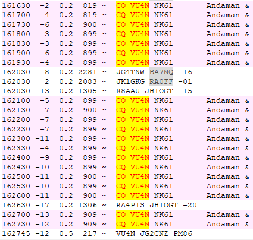

-----Original Message-----
From: Al N6TA <al.n6ta@gmail.com>
Sent: Dec 23, 2023 8:30 AM
To: William Sirvatka <billys95404@yahoo.com>
Cc: Chat Ncdxc <chat@ncdxc.org>
Subject: Re: [NCDXC Chat] VU4N on 80 M now?

Painful to see this and not make a QSO.Al
On Sat, Dec 23, 2023 at 8:07 AM William Sirvatka via Chat <chat@ncdxc.org> wrote:-24 here now_______________________________________________
Sent from my iPhone
On Dec 23, 2023, at 7:50 AM, Bruce Bern via Chat <chat@ncdxc.org> wrote:I was decoding him at 6:17 at -12, but he was gone after my first call. Mark K6FG was decoding him at -18 in SoCal. Tantalizing!73 de K3NQ_______________________________________________
On Dec 23, 2023, at 07:18, Paul Booth via Chat <chat@ncdxc.org> wrote:I was on at 6am; called a few times but mostly "listened". He worked one guy in AZ that I saw. A few JA's calling but no QSOs. He was only on 3577 this time from what I could see, no split though there was a JA calling on the split. He's either off the air at the moment or the livestream is not working (no internet). Yes, Hamalert is great as it's ahead of the spots except it does have a lot of false alerts too.
Paul
-----Original Message-----
From: Paul N6PSE <pauln6pse@gmail.com>
Sent: Dec 23, 2023 7:11 AM
To: Al N6TA <al.n6ta@gmail.com>
Cc: Chat Ncdxc <chat@ncdxc.org>
Subject: Re: [NCDXC Chat] VU4N on 80 M now?
Hamspots.net shows then he left 80M at about 6:30AM our time and was being decoded with weak signals by W6 guys.I just missed him as I got into the shack at 6:30AM and a few were still calling him but he was gone.Hamspots is a great resource that you can use to look up where a DX station is last decoded, by whom and what signal strength.Paul N6PSE
On Sat, Dec 23, 2023 at 7:07 AM Al N6TA via Chat <chat@ncdxc.org> wrote:LivesStream shows some YB contacts on 3577 kHz but no copy here. I assume he is listening at 3547 kHz._______________________________________________Fingers crosses as I miss any EU that might come on!Al N6TA
Chat mailing list
Chat@ncdxc.org
http://mail.ncdxc.org/mailman/listinfo/chat_ncdxc.org_______________________________________________
Chat mailing list
Chat@ncdxc.org
http://mail.ncdxc.org/mailman/listinfo/chat_ncdxc.org
Chat mailing list
Chat@ncdxc.org
http://mail.ncdxc.org/mailman/listinfo/chat_ncdxc.org
Chat mailing list
Chat@ncdxc.org
http://mail.ncdxc.org/mailman/listinfo/chat_ncdxc.org